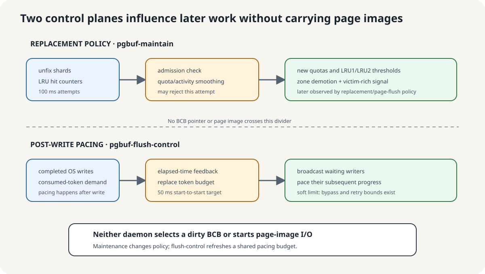

Maintenance changes replacement policy; flush-control paces later file I/O

No BCB pointer moves between these lanes. Maintenance consumes replacement samples and publishes quota/zone policy. Flush-control consumes elapsed-time and write-demand statistics, replaces a shared token budget, and wakes post-write waiters.
A 100 ms attempt may finish without accepting a quota epoch
The task has a fixed 100 ms start-to-start target and no ordinary explicit wake. On each gate-open pass it calls pgbuf_adjust_quotas(), then the intended low-activity backup pgbuf_direct_victims_maintenance().
Quota adjustment returns early when private quota is disabled, another adjustment is active, less than 1 ms elapsed, or both activity is below B/4 and less than 500 ms elapsed. Only an accepted pass resets unfix shards, increments adjust_age, consumes LRU hit counters, smooths activity, computes quotas, changes zone thresholds, and demotes overflow beyond those thresholds.
For B=32,768, the high-activity threshold is 8,192 counted final unfixes. Fewer than 81 unfixes on an accepted pass is the low-activity case. With low activity, the executable 500 ms guard normally admits roughly the first 100 ms attempt at or after 500 ms, subject to scheduling.
Cost is O(T) for a normal timing/activity check and O(T + L + D) for an accepted adjustment, plus LRU mutex waits. It performs no page copy, WAL force, or file I/O.
Teach the executable conditions and keep anomalies visible
index to start_index and immediately require index != start_index. Their bodies do not execute as written. Other victim producers still exist, so this alone is not runtime proof of starvation.One token is one page of post-write pacing credit
The bucket is a mutex-protected integer balance shared by file writers. On the FILEIO_WRITE_DEFAULT_WRITE path, after a successful OS write, fileio_compensate_flush() requests as many tokens as pages written. A writer spends available tokens immediately; an ordinary writer that is short may wait for the next condition broadcast. The write being counted has already happened, so a token controls subsequent progress rather than authorizing that write.
Initialization creates the bucket with zero tokens and a condition variable. If it fails, this daemon is absent and token acquisition becomes a no-op; page flushing still works. The first gate-open task pass records the time origin only. A later pass measures elapsed time and creates the first interval allowance.
About every 50 ms, the daemon replaces the shared allowance
- Lock the token bucket.
- Read and clear consumed-token plus page-write statistics.
- Compute an adaptive or configured interval budget.
- Replace
tokens; do not accumulate the new budget onto the old balance. - Reset interval statistics and broadcast the condition variable.
At 16 KiB/page, the adaptive 40 MiB/s floor is 2,560 pages/s, about 128 tokens per 50 ms. The non-adaptive internal 10,000-page/s default would be about 500 tokens per 50 ms. Actual values depend on elapsed time, integer truncation, and feedback.
Writers spend credits only after the OS write succeeds
fileio_write() and fileio_write_pages() call fileio_compensate_flush() after a successful OS write only in the default compensated mode. FILEIO_WRITE_NO_COMPENSATE_WRITE skips the bucket; DWB-related write paths can choose this mode. A normal participating caller may wait for budget but proceeds after at most ten broadcasts/retries. A caller holding the log critical section accounts demand without waiting for missing tokens.
This is soft pacing rather than correctness authorization or a strict throughput ceiling. CPU accounting is O(1); condition broadcast and the scheduling of awakened waiters scale with their count.
Checkpoint, log flush, foreground flush, and DWB keep their own ownership
log-checkpoint has its own configurable timer, 360 seconds by default, and selects data pages using oldest_unflush_lsa. log-flush makes append-log pages durable for WAL. Foreground and WRITE-owner paths can copy a data-page generation. DWB's helper daemons operate downstream after a stable image crosses the DWB seam. None belongs to the maintenance or token-control lane.
Compare each task body with the state it actually updates
Read pinned page_buffer.c:14251–14511,16994–17143,17146–17228 and file_io.c:626–929,4122–4373.